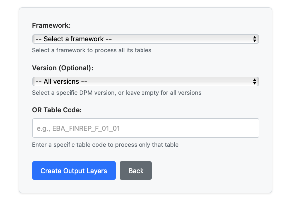

DPM (Data Point Model) Operations provides a 3-step workflow for processing regulatory data according to European Banking Authority (EBA) standards. This guide covers the essential steps to prepare, import, and create output layers from DPM data.
Execute steps in order: Prepare → Import → Create Output Layers
| Step | Purpose | Action | Result |
| Step 1: Prepare DPM Data | Validates and stages source data for processing | Click "Prepare DPM Data" card | Source data validated and ready for import |
| Step 2: Import DPM Data | Processes source data and applies transformations | Click "Import DPM Data" card | Source data imported into DPM structures with validation |
| Step 3: Create Output Layers | Generates final regulatory reporting outputs | Click "Create Output Layers" card | All regulatory reports generated and ready for submission |
When clicking on Create Output Layers, you will see the following screen:

Selection Options:
Process:
| Sequential Processing | Data Quality Management | Performance Optimization |
| Execute steps in order: Prepare → Import → Create Output | Address quality issues in Prepare step before import | Process data in appropriate batch sizes for system capacity |
| Complete each step before proceeding to the next | Monitor validation error rates during Import process | Monitor system resources during operations to prevent overload |
| Validate results at each stage before moving forward | Verify output compliance in final step against EBA standards | Schedule intensive operations during off-peak hours |
| Preparation Failures | Import Processing Errors | Output Generation Problems |
| Source data validation fails | High error rates during import | Output creation fails |
| • Check file formats and encoding • Verify required data elements present • Review preparation logs for errors | • Confirm preparation completed successfully • Check transformation rule configurations • Analyze exception reports for patterns | • Verify import completed successfully • Check output template configurations • Review calculation rules and logic |
| Workflow Dashboard | External Systems | Quality Management | Compliance Monitoring |
| Integrate with broader reporting workflows | Connect to core banking and reporting platforms | Link to data governance systems | Maintain audit trails for supervision |